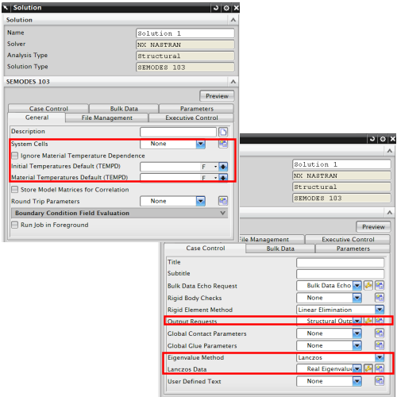

对于模态分析，NX Nastran 解算方案属性包括：
想要的模态属性
系统单元
输出请求
特征值方法。确定求解类型：Lanczos 或 Householder。方法将指定解算方案的实特征值提取。特征值提取选项将储存为特定于求解器的对象，对于大部分模型，推荐使用 Lanczos 方法，对于较小的模型，则推荐使用 Householder 方法。
要获取更多信息，参见高级仿真在线帮助中的 Nastran 环境。
